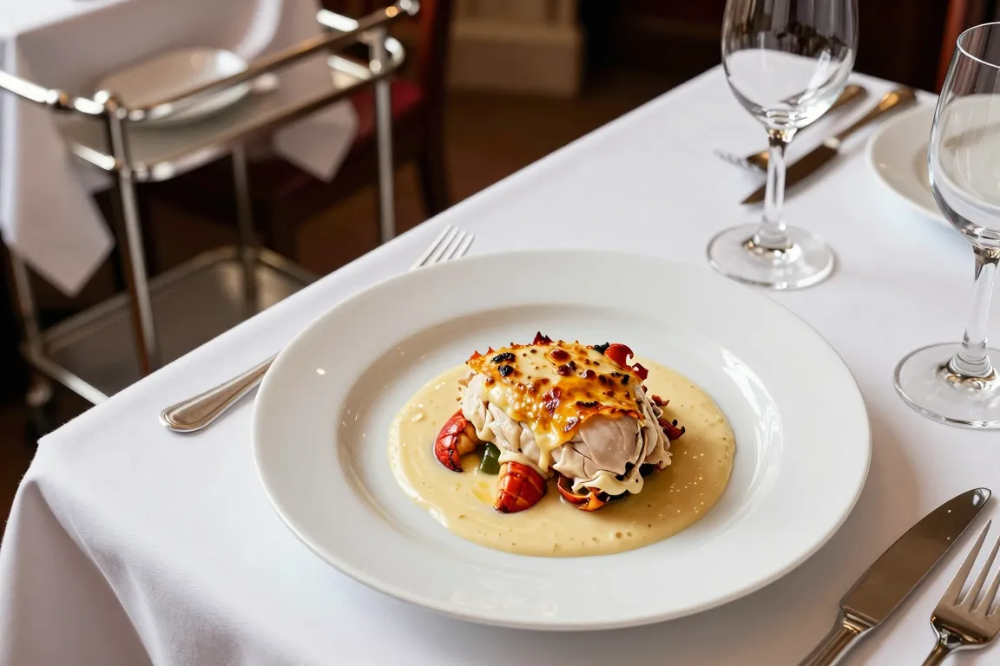

Restauranten til en mester i en provinsby. Fernand Point på La Pyramide i Vienne lager den klassiske sausen med smør, fløte og råvarer fra sin egen region. Et lite kjøkken, en kort meny og en fin kjeller drar gjestene til veien.

Kjerneidé
Lag den klassiske retten godt med regionens beste råvarer, på en kort meny, og gjør restauranten til et reisemål.
Designprinsipper
Kjøp de beste lokale råvarene hver dag: Bresse-kylling, kreps, fløte, smør og ost.
Behold den klassiske sausen, og lag den med ferskt smør og fløte, uten snarveier.
Hold menyen kort og lag hver rett på bestilling, med et lite team på kjøkkenet.
Server hver rett på en tallerken eller et fat ved bordet, med sausen ved siden av.
Lær opp unge kokker på kjøkkenet; hver enkelt lærer hver stasjon.
Sett hver rett sammen med en vin fra Rhônedalen, og la kjelleren lede måltidet.
La gjesten ta seg tid: et godt måltid tar en hel ettermiddag.